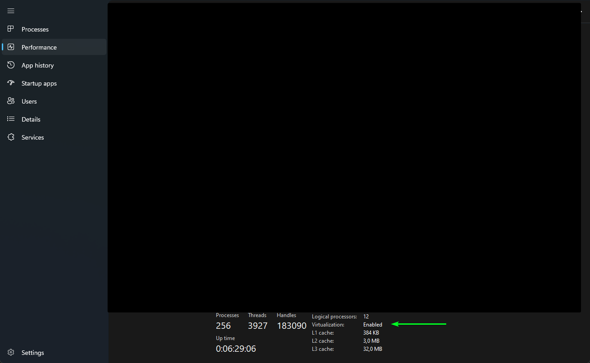
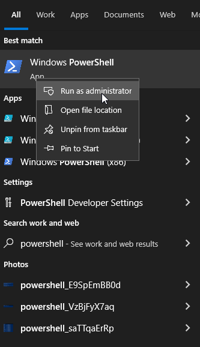
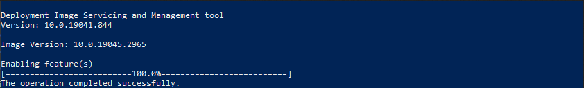
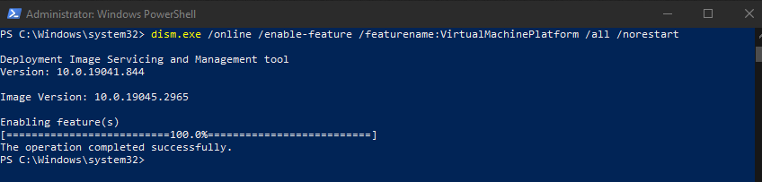
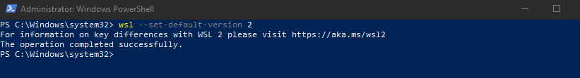

WSL (Windows Subsystem for Linux) – Praktický průvodce & tipy
Moderní přehled instalace, nastavení a doporučení pro práci s WSL na Windows.

Co je WSL?
- WSL umožňuje instalaci a provoz linuxových distribucí přímo na Windows.
- Umožňuje spouštět linuxové aplikace bez potřeby virtuálního stroje.
Note
Ideální pro vývojáře, kteří potřebují Linux nástroje na Windows.
Instalace WSL na Windows
Krok 1: Povolení virtualizace v BIOS/UEFI
Important
V BIOSu/UEFI povolte:
- Podpora CPU virtualizace
> - Intel:
Intel VT-x - AMD:
AMD-VneboSVM - Virtualizační technologie
> - Intel:
VT-d - AMD:
AMD-Vi - Vnořená virtualizace (jen pokud potřebujete virtualizaci uvnitř WSL)
Kontrola povolení virtualizace:
- Stiskněte
Ctrl + Shift + Esc - Přejděte na záložku Výkon (Performance)
- Dole najdete Virtualization: Enabled

Krok 2: Povolení WSL v systému
Spusťte PowerShell jako správce

Aktivujte WSL:
dism.exe /online /enable-feature /featurename:Microsoft-Windows-Subsystem-Linux /all /norestart
Krok 3: Povolení Virtual Machine Platform & WSL 2
Aktivujte platformu pro WSL 2:
dism.exe /online /enable-feature /featurename:VirtualMachinePlatform /all /norestart

Important
Po povolení funkcí restartujte počítač.
Krok 4: Stažení aktualizace Linux jádra
- Stáhněte a nainstalujte poslední aktualizaci jádra.
- Řeší kompatibilitu s Dockerem a dalšími nástroji.
Note
Doporučuji vždy instalovat nejnovější verzi jádra.
Krok 5: Nastavení WSL 2 jako výchozí
Nastavte WSL 2 jako výchozí:
wsl --set-default-version 2

Krok 6: Instalace linuxové distribuce
Stáhněte si RootFS (např. Ubuntu) a nainstalujte:
wsl --import Ubuntu-22.04 C:\WSL\Ubuntu2204 C:\UbuntuRootFS\ubuntu-jammy-wsl-amd64-ubuntu22.04lts.rootfs.tar.gz --version 2
Note
Ubuntu-22.04= Název distribuceC:\WSL\Ubuntu2204= Cesta k instalaciC:\UbuntuRootFS\...= Cesta k RootFS souboru--version 2= Použít WSL 2
Ověření instalace:
wsl --list
Vypnutí všech WSL instancí
wsl --shutdown
Warning
Odstranění špatně nainstalované distribuce:
wsl --unregister <distro name>
Např.: wsl --unregister Ubuntu-22.04
Přesun WSL distribuce na jiné místo
Klasická past: nelze jen přesunout soubor
ext4.vhdxna jiné místo – musíš projít cestou export → import.
Co vlastně chceš udělat?
Pokud chceš přesunout distribuci z:
D:\wsl\podman-machine-default\ext4.vhdx
na:
D:\wsl\ext4.vhdx
Nejde o přesun souboru – jde o přesun celé WSL distribuce na jiné umístění.
Warning
Ruční přesunutí ext4.vhdx nebo úprava registrů rozbije WSL nebo Podman. Použij výhradně postup níže.
Správný postup (export → import)
1. Zjisti název distribuce
wsl -l -v
Výstup zobrazí název (např. podman-machine-default).
2. Zastav distribuci
wsl --shutdown
3. Exportuj distribuci
wsl --export podman-machine-default D:\wsl\backup.tar
Vytvoří se záloha jako .tar soubor.
4. Odregistruj starou distribuci
wsl --unregister podman-machine-default
Warning
Tímto krokem zmizí starý ext4.vhdx – proto je předchozí export nezbytný.
5. Importuj na nové místo
wsl --import podman-machine-default D:\wsl\ D:\wsl\backup.tar --version 2
Po dokončení bude distribuce umístěna v:
D:\wsl\ext4.vhdx
6. Ověř výsledek
wsl -l -v
Specificky pro Podman machine
Podman machine je wrapper nad WSL. Po přesunu může být potřeba:
podman machine start
nebo v nejhorším případě:
podman machine init